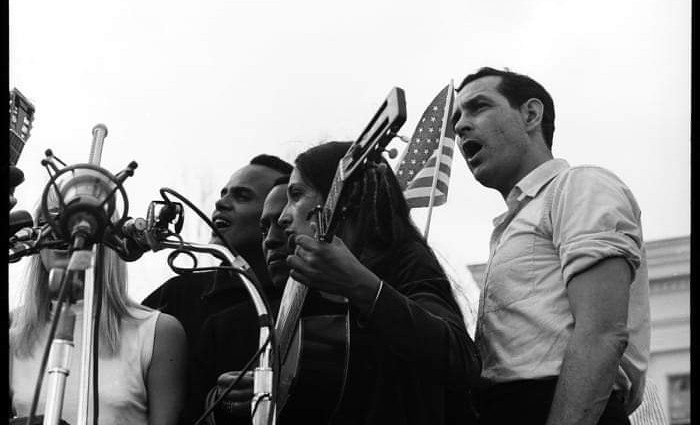
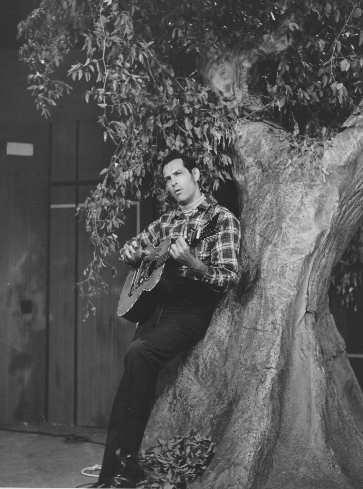

Bio
Oscar Brand was a writer, composer, TV personality, and a performer at the center of the Great Folk Revival.
He was widely acknowledged as the "Dean of American Folk Music," as the New York Times put it, having written the authoritative text on the subject among 10 best-selling books, and for his radio show Folksong Festival, which aired for 71 years on WNYC and held the Guinness World Record as longest-running entertainment show in history with one host.
Guests included everyone from Woody and Arlo Guthrie to Judy Collins and Pete Seeger, providing a platform to new artists such as Joni Mitchell and Bob Dylan, who slept under Oscar's grand piano when he first came to New York.
Oscar wrote hundreds of songs, including a number one hit and the unofficial Canadian national anthem, five Broadway and off-Broadway musicals, and the official Bicentennial show at the Kennedy Center.
He recorded 100 albums, including top-selling series of bawdy songs, military songs, and election songs, now in the Smithsonian, and performed over 5,000 concerts.
He had network TV shows in the U.S. and his native Canada, made commercials for Log Cabin Syrup and Cheerios, and helped create Sesame Street. Oscar the Grouch was named after him for insisting the street have garbage cans for realism.
Oscar was also a Founding Director of the National Academy of Popular Music, Curator of the Songwriters Hall of Fame, and an expert witness in the plagiarism suit against George Harrison. He won a Tony, an Emmy, and two Peabodys, but ironically, never an Oscar.
For More Background
